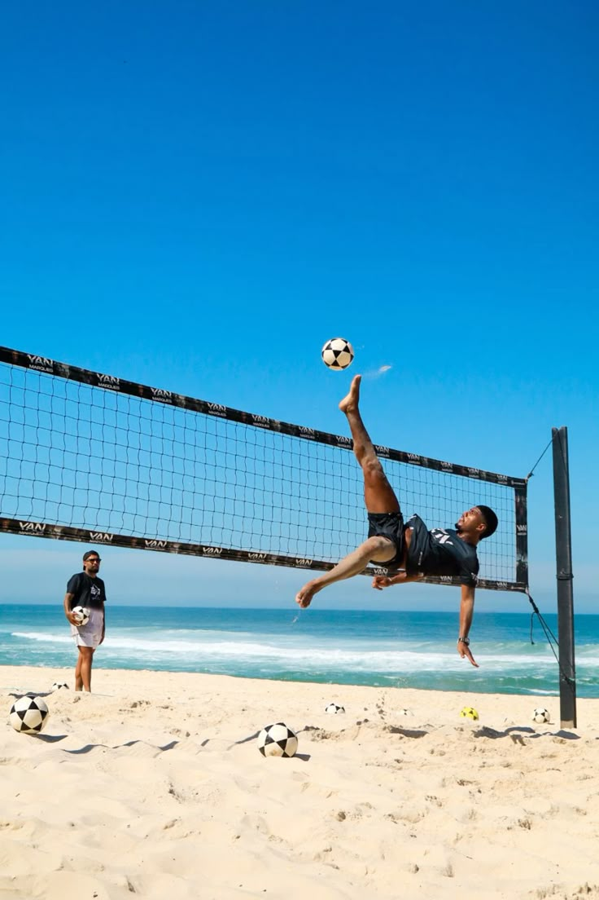
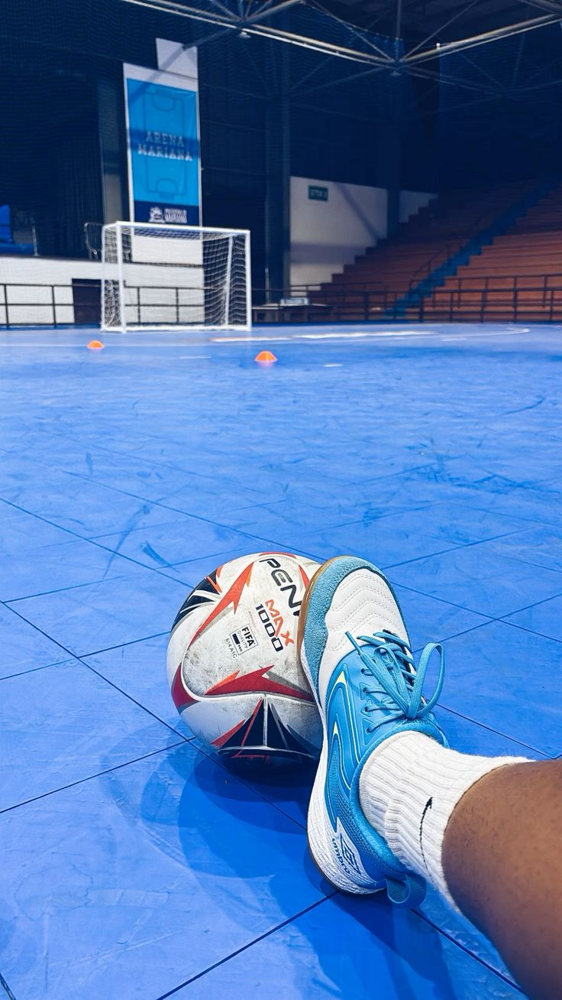
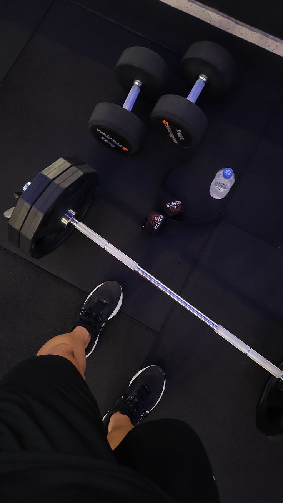
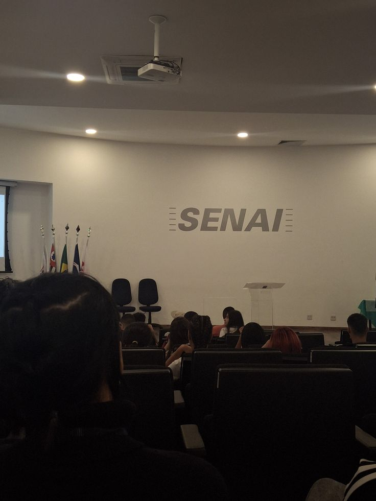
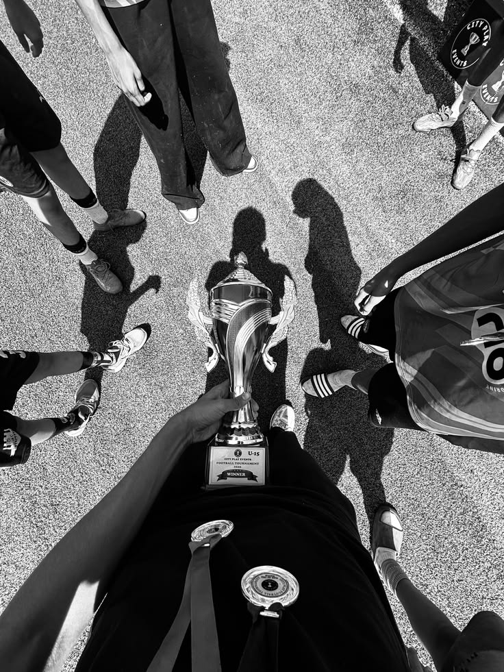

Saúde e qualidade de vida
Atividade física regular previne doenças, melhora o humor e dá mais disposição para o dia a dia. Quero ajudar pessoas a começar e a manter esse hábito.
Olá, eu sou Vitor
Tenho 18 anos, estudo Desenvolvimento de Sistemas no SENAI e quero seguir na Educação Física. Aqui você vê por onde eu passei, o que já sei fazer e para onde vou.

Meu nome é Vitor e tenho 18 anos. Faço o curso técnico em Desenvolvimento de Sistemas no SENAI e pretendo cursar Educação Física no próximo ano.
Aos 18, as escolhas importantes começam a aparecer. Eu escolhi dois caminhos que parecem diferentes, mas se parecem muito: programar e treinar. Nos dois, ninguém evolui de uma vez. Evolui quem repete, erra, ajusta e continua.
No SENAI aprendo a transformar ideias em sistemas que funcionam. Na Educação Física quero fazer algo parecido com o corpo e com a saúde das pessoas: planejar, acompanhar e ver o resultado aparecer.
Gosto muito de esportes, tanto de praticar quanto de acompanhar competições. No meu tempo livre, gosto de jogar, assistir a vídeos, ouvir música e passar momentos com amigos e familiares. Também gosto de aprender coisas novas, principalmente relacionadas à tecnologia. Minhas inspirações vêm das pessoas que estão ao meu redor, que me motivam a buscar meus objetivos, superar desafios e nunca desistir dos meus sonhos.
Cada etapa abaixo me trouxe até aqui.
Minha história começou no SESI, onde tive minhas primeiras experiências escolares e também meu primeiro contato com a tecnologia e os computadores, despertando minha curiosidade pela informática. Já no esporte, meu primeiro contato aconteceu aos 5 anos de idade, desde então, ele passou a fazer parte da minha vida, ensinando valores como disciplina, dedicação, respeito e trabalho em equipe. Essas experiências foram importantes para meu crescimento pessoal e ajudaram a construir quem sou hoje.
No SENAI aprendo lógica de programação e desenvolvimento web. Este portfólio é feito com HTML, CSS e JavaScript.
Quatro áreas da profissão que me interessam.
Atividade física regular previne doenças, melhora o humor e dá mais disposição para o dia a dia. Quero ajudar pessoas a começar e a manter esse hábito.
A aula de Educação Física é, para muita gente, o primeiro contato com o esporte. Um bom professor faz esse contato ser positivo.
Montar um treino é planejar: objetivo, carga, descanso e evolução. É um trabalho de método, parecido com o de desenvolver um sistema.
Relógios de corrida, aplicativos de treino e análise de desempenho já fazem parte do esporte. É aqui que minhas duas áreas se encontram.
Uma ferramenta que fiz em JavaScript para unir as duas áreas. Digite uma idade e veja as faixas de batimento cardíaco para treinar.
Cálculo: 220 menos a idade, uma estimativa muito usada. Ela não substitui a avaliação de um profissional de Educação Física ou de um médico.
Treino, estudo e esporte. Clique numa foto para ampliar.






Recebe a idade, estima a frequência cardíaca máxima e mostra as cinco zonas de intensidade. Feita com HTML, CSS e JavaScript.
Testar agoraSistema web desenvolvido para facilitar o gerenciamento de propriedades rurais, permitindo acompanhar informações sobre fazendas, culturas, sensores e alertas em um só lugar. Desenvolvido com HTML, CSS, JavaScript, PHP e CodeIgniter.
Ver no GitHubProjeto voltado ao ambiente esportivo, com a proposta de organizar fichas de treino, registrar exercícios, acompanhar o desempenho e monitorar a evolução dos praticantes. Desenvolvido com HTML, CSS e JavaScript.
Ver no GitHub